| Term | detail | equivalent in other FPGAs |
|---|---|---|
| core | logic, RAM and DSP | Logic resources, fabric |
| periphery | IO, transceiver, PLL | |
| ALM | variable input LUT + registers | SLICE, LE, PFU |
| ALUT | LUT part of ALM | LUT |
| LAB | collection of ALMs + routing | CLB |
| M20K | block RAM | BRAM / URAM, EBR |
| MLAB | small RAM made from a LAB | SLICEM |
| DSP block | hard block for fixed/floating point/complex multiplication | DSP48 |
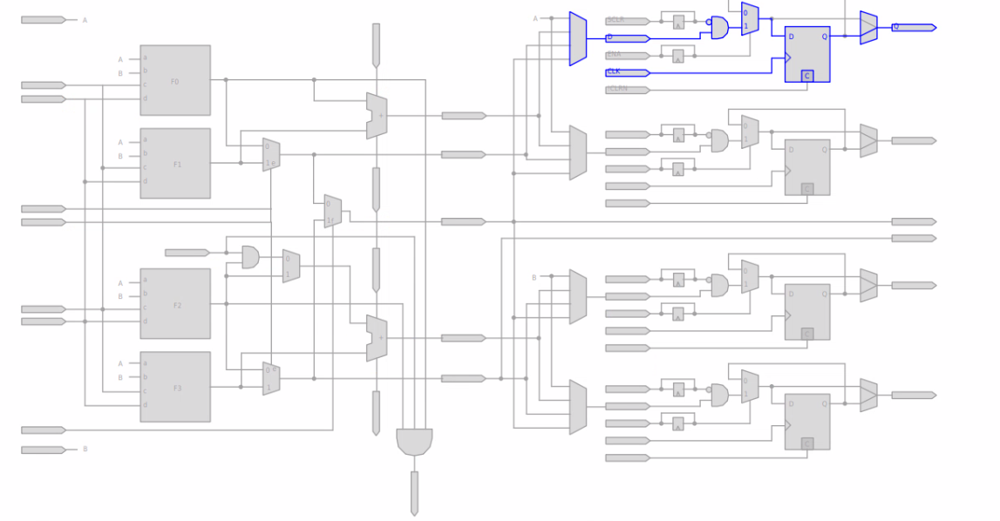
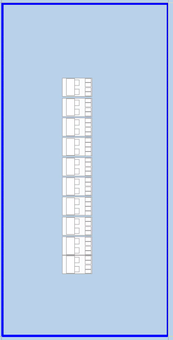
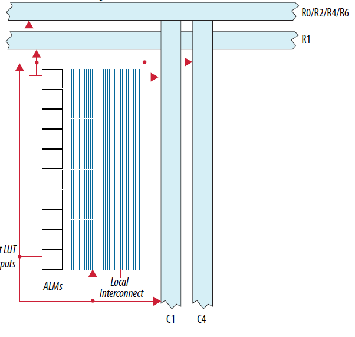
HYPERset_global_assignment -name FLOW_ENABLE_HYPER_RETIMER_FAST_FORWARD ON
for recommendations on how to reduce critical paths, and what the fmax
could be.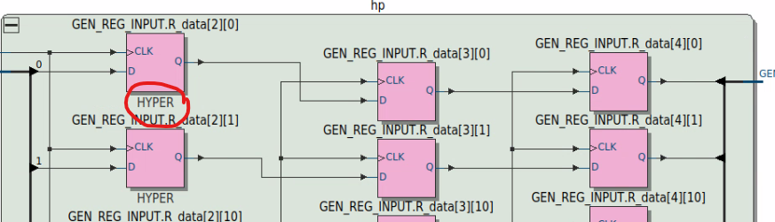
logic [3:0][7:0] the_mem [256]Read during write
MLAB = undefined
M20K = old data
By default, the software will ignore read during write behaviour.
You can use
set_global_assignment -name STRICT_RAM_RECOGNITION ON
to
Inferring new data behaviour can lead to extra bypass logic insertion
even with defined rdw behaviour, the
(* ramstyle = "no_rw_check" *) attribute will remove extra
passthrough logic. Recommend an assertion that read during write
doesn’t occur if no_rw_check is in use
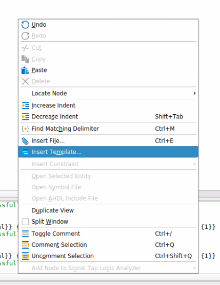
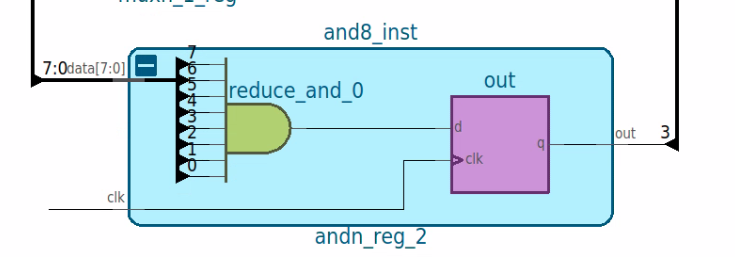
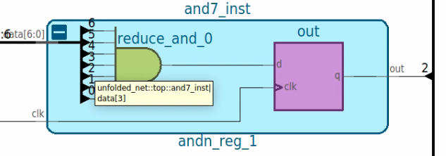
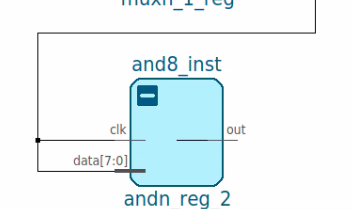
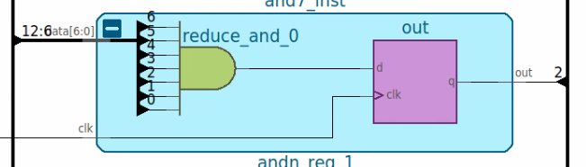
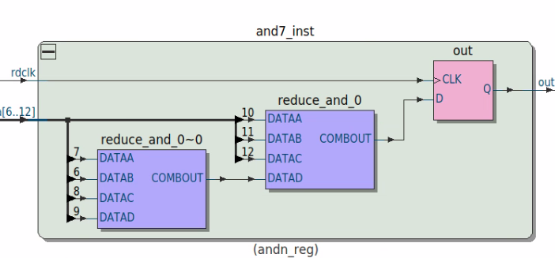
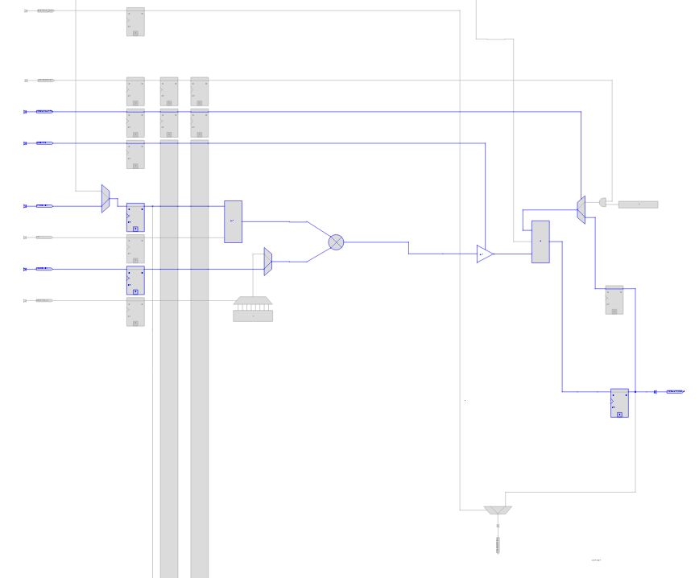
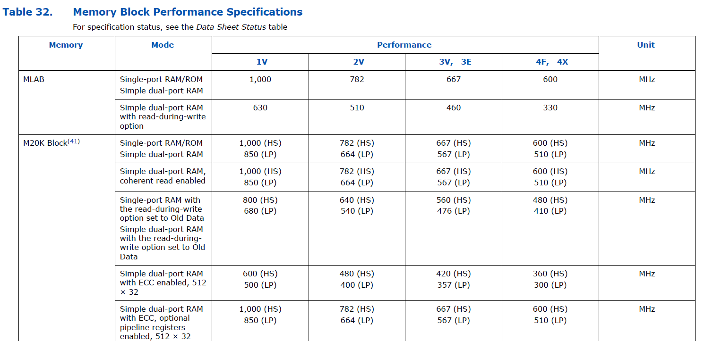
set_instance_assignment -name MAX_LABS can be used to
control number of LABS (=ALM*10)set_instance_assignment -name MAX_RAM_BLOCKS_M4K can be
used to control number of M20K BRAMsset_instance_assignment -name MAX_BALANCING_DSP_BLOCKS
can be used to control number of DSP blocksset_instance_assignment or to the whole design using
set_global_assignment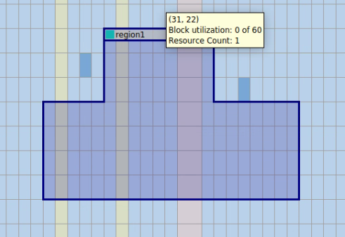
Use LogicLock to restrict usage to an area of the FPGA
Assignments -> Logic Lock Regions Window or Tools -> Chip Planner to draw regions
Assign logic by design entry hierarchy or Design Partition